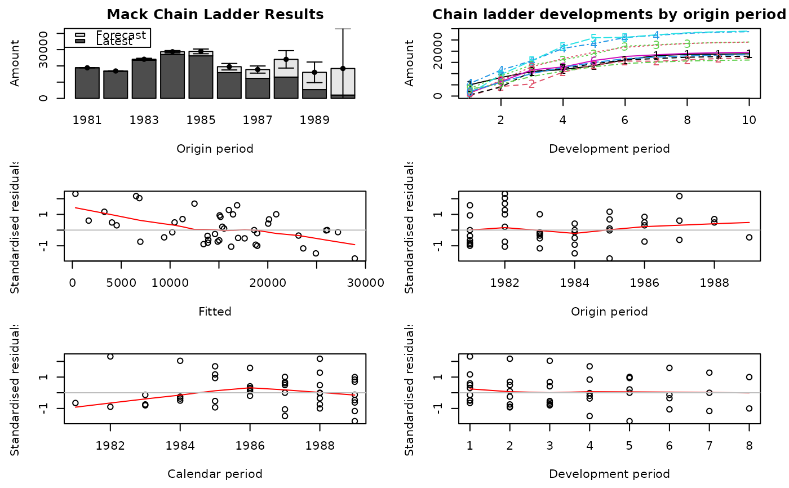

Plot method for a MackChainLadder object
plot.MackChainLadder.Rdplot.MackChainLadder, a method to plot the output of
MackChainLadder. It is designed to give a quick overview
of a MackChainLadder object and to check Mack's model assumptions.
Usage
# S3 method for MackChainLadder
plot(x, mfrow=NULL, title=NULL,
lattice=FALSE, which=1:6, ...)Arguments
- x
output from
MackChainLadder- mfrow
see
par- title
see
title- lattice
logical. Default is set to
FALSEand plots as described in the details section are produced. Iflattice=TRUE, the functionxyplotof the lattice package is used to plot developments by origin period in different panels, plus Mack's S.E.- which
if a subset of the plots is required, specify a subset of the numbers 1:6.
- ...
optional arguments. See
plot.defaultfor more details.
Details
plot.MackChainLadder shows six graphs, starting from the top left
with a stacked bar-chart of the latest claims position plus IBNR and
Mack's standard error by origin period; next right to it is a
plot of the forecasted development patterns for all origin periods
(numbered, starting with 1 for the oldest origin period),
and 4 residual plots. The residual plots
show the standardised residuals against fitted values, origin period,
calendar period and development period. All residual plot should show
no patterns or directions for Mack's method to be applicable.
Pattern in any direction can be the result of trends and should be
further investigated, see
Barnett and Zehnwirth. Best estimates for reserves. Proceedings
of the CAS, LXXXVI I(167), November 2000. for more details on trends.
See also
See Also MackChainLadder,
residuals.MackChainLadder
Examples
plot(MackChainLadder(RAA))
